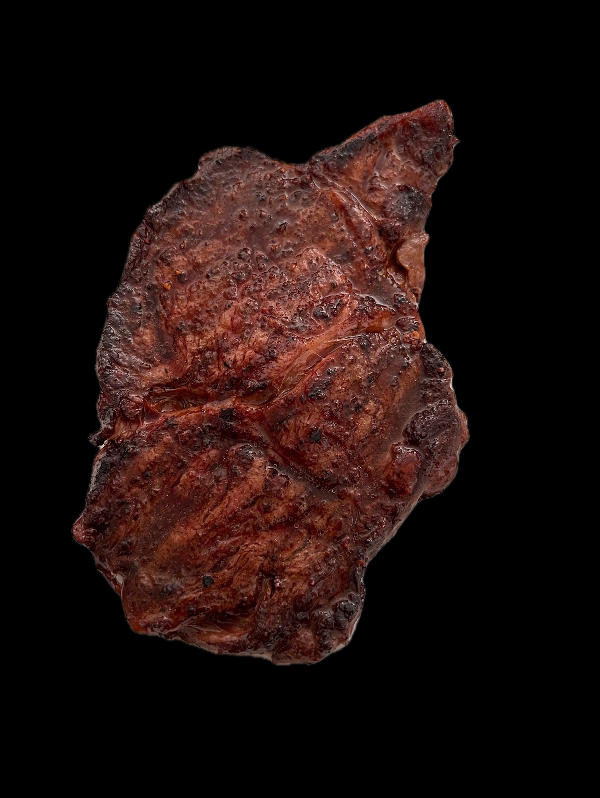

Steak and Broccoli
 
This meal is a good balance of both meat and plant based nutrition
A filling and healthy meal, low in carbs, and high in nutrients.
The steak is cooked as medium well, but you can adjust to your liking.
The broccoli should be soft and tender, but not over cooked.
Ingredients:
- 2 heads of broccoli
- 1 ribeye steak
- 4 cloves of garlic
- Grass fed butter
Steps:
- Prepare the Steak: Take the steak out of the refrigerator
and let it sit for about 30 minutes to reach room temperature.
- Boil Water: Fill a pot with water and bring it to a boil over high heat.
- Cut the Broccoli: While waiting for the water to boil, cut the broccoli florets off the main stem.
- Cook the Broccoli: Once the water is boiling, add the broccoli florets and cook for 10 to 15 minutes, or until they are tender enough to be easily pierced with a fork.
- Heat the Skillet: While the broccoli is cooking, heat a skillet over medium-high heat to prepare for the steak.
- Season and Sear the Steak: Season one side of the steak with salt and pepper, then place it seasoned-side down in the hot skillet. Cook for 4 minutes and 30 seconds.
- Flip the Steak: Season the top side of the steak with salt and pepper. Flip the steak and cook the other side for another 4 minutes and 30 seconds.
- Add Garlic and Baste: With 2 minutes and 30 seconds remaining, crush a garlic clove with a spoon and add it to the skillet.
Use a spoon to baste the steak with the melted butter in the skillet until the timer runs out.
Home